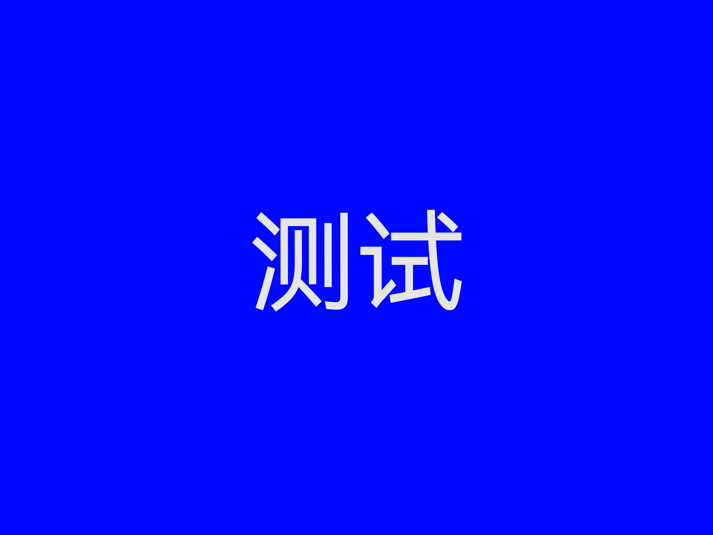

臻辉班
让努力成为一种常态
让优秀成为一种习惯
黄欢
关于我们
ABOUT US
班级相册
/ PHOTOS
班级合影 · 最珍贵的记忆
课堂学习
校园活动

操场训练
集体活动
同窗友谊 · 青春飞扬
毕业典礼
图书馆时光
运动会
Splendid CLASS
锦绣韶华 · 前程似锦
不气馁，继续向前！
一次考试不代表全部
愿我们顶峰相见
学业精进 未来璀璨
新岁启封，华章再续
同心聚力，续写荣光
2026
骐骥驰骋
势不可挡
平安喜乐
前程似锦
万事胜意
BEST MEMORY
臻辉班
属于我们的时光
班级纪念册 · 弹幕留言墙
写下你的祝福与回忆，所有人都能看见
正在加载云端留言...
发布
查看我的留言
我的留言
0
×
暂无留言，发布第一条吧✨
×
你的浏览器不支持 HTML5 音频播放。
我们的青春
2026 Graduation
▶